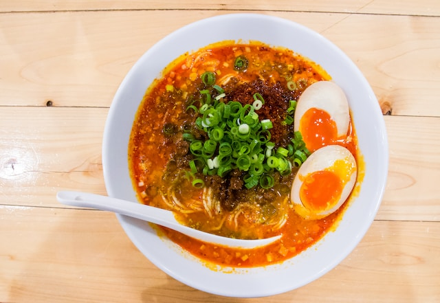
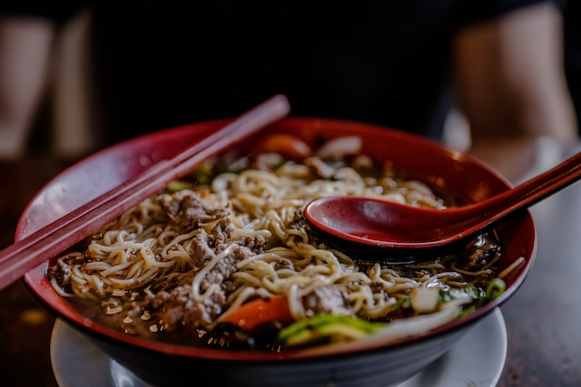
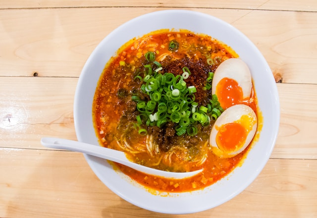
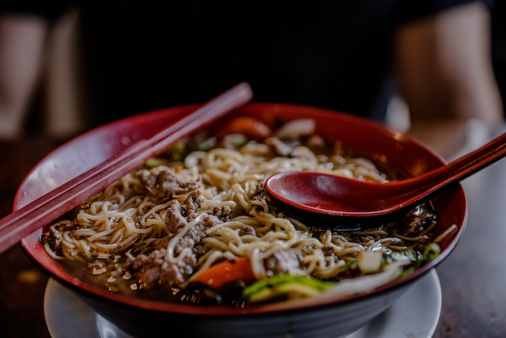
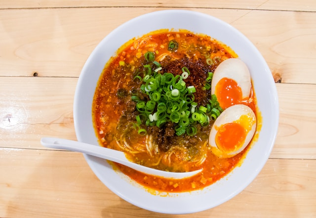
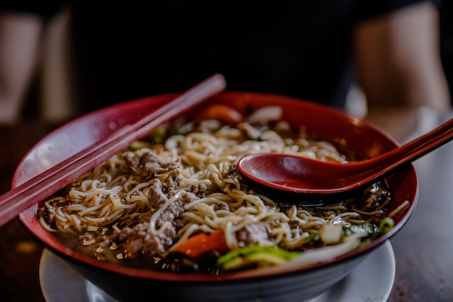
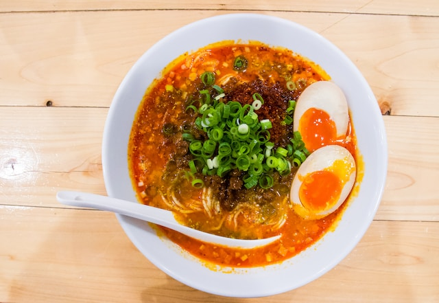
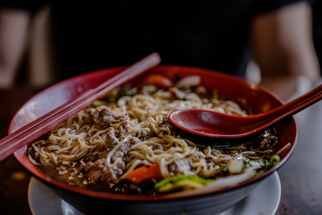
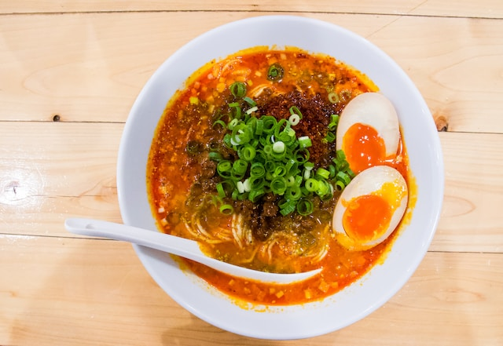
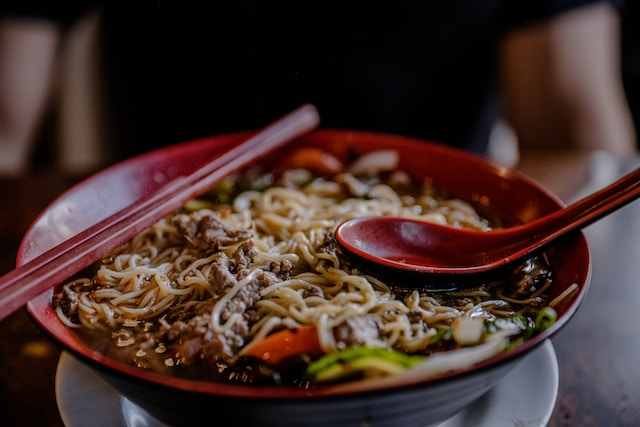

Sweet N Spicy Ramen
 
Description
A sweet and spicy ramen recipe that only takes a few minutes to make!
Ingredients
2 garlic cloves
green onion
soya sauce
sugar
dates/grape molasses
ramen seasonings
chilli flakes
1 cup water for cooking
Steps:
chop the garlic and green onions
in a bowl mix together 1 tbs of soya sauce, 1 tsp of molasses and 1/2 tsp of sugar with 2 tbs of water and keep aside
turn on the flame and add oil to pan and garlic,ramen seasonings and chilli flakes (according to spice level)
cook for some time and add soya sauce mixute and cook for a minute
add 1 cup of water and when it boils add 1 packet of ramen
after the ramen is cooked add green onions to garnish, enjoy
All Recipes
 






